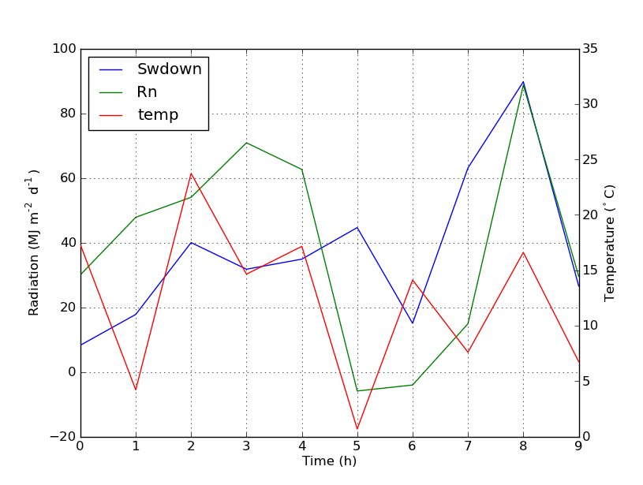

Secondary axis with twinx(): how to add to legend?
I have a plot with two y-axes, using twinx(). I also give labels to the
lines, and want to show them with legend(), but I only succeed to get the
labels of one axis in the legend:
import numpy as np import matplotlib.pyplot as plt from matplotlib import rc rc('mathtext', default='regular') fig = plt.figure() ax = fig.add_subplot(111) ax.plot(time, Swdown, '-', label = 'Swdown') ax.plot(time, Rn, '-', label = 'Rn') ax2 = ax.twinx() ax2.plot(time, temp, '-r', label = 'temp') ax.legend(loc=0) ax.grid() ax.set_xlabel("Time (h)") ax.set_ylabel(r"Radiation ($MJ\,m^{-2}\,d^{-1}$)") ax2.set_ylabel(r"Temperature ($^\circ$C)") ax2.set_ylim(0, 35) ax.set_ylim(-20,100) plt.show()
So I only get the labels of the first axis in the legend, and not the label 'temp' of the second axis. How could I add this third label to the legend?

Answer
You can easily add a second legend by adding the line:
ax2.legend(loc=0)
You'll get this:
But if you want all labels on one legend then you should do something like this:
import numpy as np import matplotlib.pyplot as plt from matplotlib import rc rc('mathtext', default='regular') time = np.arange(10) temp = np.random.random(10)*30 Swdown = np.random.random(10)*100-10 Rn = np.random.random(10)*100-10 fig = plt.figure() ax = fig.add_subplot(111) lns1 = ax.plot(time, Swdown, '-', label = 'Swdown') lns2 = ax.plot(time, Rn, '-', label = 'Rn') ax2 = ax.twinx() lns3 = ax2.plot(time, temp, '-r', label = 'temp') # added these three lines lns = lns1+lns2+lns3 labs = [l.get_label() for l in lns] ax.legend(lns, labs, loc=0) ax.grid() ax.set_xlabel("Time (h)") ax.set_ylabel(r"Radiation ($MJ\,m^{-2}\,d^{-1}$)") ax2.set_ylabel(r"Temperature ($^\circ$C)") ax2.set_ylim(0, 35) ax.set_ylim(-20,100) plt.show()
Which will give you this:

Suggest
I'm not sure if this functionality is new, but you can also use the get_legend_handles_labels() method rather than keeping track of lines and labels yourself:
import numpy as np import matplotlib.pyplot as plt from matplotlib import rc rc('mathtext', default='regular') pi = np.pi # fake data time = np.linspace (0, 25, 50) temp = 50 / np.sqrt (2 * pi * 3**2) \ * np.exp (-((time - 13)**2 / (3**2))**2) + 15 Swdown = 400 / np.sqrt (2 * pi * 3**2) * np.exp (-((time - 13)**2 / (3**2))**2) Rn = Swdown - 10 fig = plt.figure() ax = fig.add_subplot(111) ax.plot(time, Swdown, '-', label = 'Swdown') ax.plot(time, Rn, '-', label = 'Rn') ax2 = ax.twinx() ax2.plot(time, temp, '-r', label = 'temp') # ask matplotlib for the plotted objects and their labels lines, labels = ax.get_legend_handles_labels() lines2, labels2 = ax2.get_legend_handles_labels() ax2.legend(lines + lines2, labels + labels2, loc=0) ax.grid() ax.set_xlabel("Time (h)") ax.set_ylabel(r"Radiation ($MJ\,m^{-2}\,d^{-1}$)") ax2.set_ylabel(r"Temperature ($^\circ$C)") ax2.set_ylim(0, 35) ax.set_ylim(-20,100) plt.show()